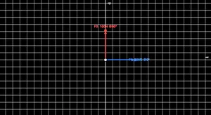
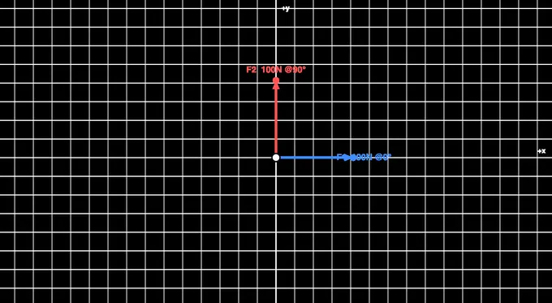
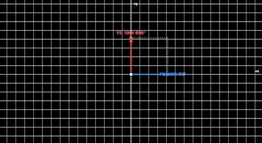
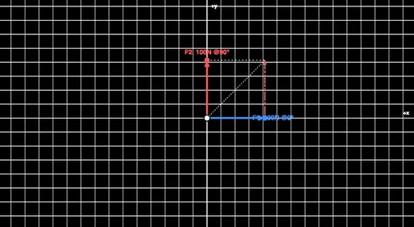

Free Body Diagram & Force Resolver
Add Force Vectors • Drag to Edit • Resultant & Components • Force Polygon • Equilibrium Check • Lami’s Theorem
3D Model — Free Body Diagram & Force Resolver
Interactive 3D model of this apparatus. Pick a component on the right, then drag to rotate · scroll to zoom · right-drag to pan.
Tip: drag a force on the diagram to move it, or click it to type an exact magnitude & angle. You can also edit the numbers below. Angles are measured anticlockwise from the +x axis.
Σ Live equations — values substituted from the current forces
1 Overview
This free, browser-based free body diagram maker lets you build a system of concurrent coplanar forces acting at a single point and instantly see how they combine. Add force vectors, set each one’s magnitude and angle (or drag its arrowhead), and the tool computes the resultant force, its x and y components (ΣFx, ΣFy), its direction, and whether the point is in equilibrium — with a live force polygon that closes when the forces balance.
It has four modes: Simulate (build and analyse any force system), Explore (learn resolution, the resultant, equilibrium and Lami’s theorem), Practice (solve randomised resultant problems) and Quiz (a graded 5-question test with a star rating). Built for engineering statics students, physics learners and vocational trainees.
2 Getting Started

Load a Preset to start from a worked example, or press + Add Force on the toolbar along the bottom of the diagram. Each force has a magnitude and an angle (measured anticlockwise from the +x axis). There are three ways to set a force:
- Drag — grab a force anywhere along its arrow (the cursor turns to a hand) and drag; the magnitude and angle update live.
- Click to type — single-click a force, or right-click it and choose Enter values…, to open a small editor and type an exact magnitude and angle.
- Forces panel — edit the numbers in the list below the diagram.
- Switch units between newtons (N) and pounds-force (lbf); very large forces are shown automatically in kN, MN or GN (or kip in Imperial) so the labels stay readable.
- The bottom toolbar carries Add Force, Show Calculations, Apply Polygon Law and the view toggles (Resultant, Components, Polygon, Equilibrant).
- The collapsible Display panel (top-right of the diagram) controls Angle arcs, Labels, Axes, Grid and Sound.
- Right-click (or long-press) the diagram for Enter values / Save Image / Copy Resultant / Reset.
3 Simulate Mode & Readouts
Every force is drawn as a coloured arrow from the point. The readout badges show the resultant magnitude, its direction, the component sums ΣFx and ΣFy, and the equilibrium status. When ΣFx and ΣFy are both (near) zero the status turns green and the force polygon closes.
The Live equations panel shows ΣFx, ΣFy, R and θ in classical notation with your numbers substituted, and 🔢 Show Calculations opens a full step-by-step derivation (resolve → sum → magnitude → direction).
The Equilibrant toggle shows the single force that would balance the system — equal in magnitude and opposite in direction to the resultant. The Components toggle shows the resultant resolved into its rectangular Rx and Ry parts.
The Display panel adds Angle arcs — a traditional arc drawn from the +x axis round to each force, labelled with its angle in degrees — plus switches for Labels, Axes and Grid so you can declutter the diagram when teaching or taking a screenshot.
With the Polygon layer on, press ▶ Apply Polygon Law to play an animation: each force slides into place tip-to-tail one after another while the original arrows fade to grey, then the white resultant is drawn closing the polygon. The grey/animated result stays on screen until you make a change — it is the clearest way to see why the resultant is the closing side of the force polygon. (The button needs at least two forces.)
4 Explore Mode
Explore covers five categories: Basics (forces, free body diagrams, vectors), Components (resolving a force into Fx and Fy), Resultant (parallelogram and polygon laws), Equilibrium (the ΣF = 0 conditions and Lami’s theorem) and Applications. Pick a category, then a topic card for the detail and a worked example.
5 Practice & Quiz
Practice shows a random force system and asks you to compute the resultant magnitude — type your answer and press Check for instant feedback and a full component-by-component solution. Your score is tracked.
Quiz gives 5 randomly chosen questions (resultants, components, equilibrium conditions and Lami’s theorem) with instant grading and a final star rating. The readout badges are hidden in Practice and Quiz so answers are never given away.
6 Key Formulas
Components: Fx = F·cosθ, Fy = F·sinθ.
Resultant: Rx = ΣFx, Ry = ΣFy, R = √(Rx² + Ry²), θ = atan2(Ry, Rx).
Two forces (parallelogram law): R = √(F1² + F2² + 2·F1·F2·cosφ).
Equilibrium: ΣFx = 0 and ΣFy = 0. Lami’s theorem (3 forces): F1/sinα = F2/sinβ = F3/sinγ.
Worked example: 100 N at 0° and 100 N at 90° → Rx = 100, Ry = 100, R = √20000 = 141.4 N at 45°.
7 Tips & Best Practices
- Always pick a consistent sign convention — here, +x is right and +y is up, angles anticlockwise.
- Resolve before you add: never add force magnitudes directly unless they are collinear.
- A closed force polygon is the graphical proof of equilibrium — turn the Polygon layer on and use Apply Polygon Law to watch it build tip-to-tail.
- Use Lami’s theorem only for exactly three concurrent forces in equilibrium.
- The equilibrant is equal and opposite to the resultant — it is what you add to reach equilibrium.
Free Body Diagram Maker — Resolve Forces & Check Equilibrium

The free body diagram (FBD) is the single most important sketch in engineering statics. Before any equation is written, you isolate the body, draw every force acting on it as an arrow, and only then apply the laws of equilibrium. This interactive free body diagram maker lets you build a system of concurrent forces acting at a point, drag the arrows to change them, and read the resultant force, its components and the equilibrium status in real time — turning an abstract vector sum into something you can see and feel.
Resolving a Force Into Components
Any force F acting at an angle θ can be split into a horizontal part and a vertical part: Fx = F·cosθ and Fy = F·sinθ. This resolution is the key to adding forces, because you can only add components that point along the same axis. A 200 N force at 30° has Fx = 200·cos30° = 173.2 N and Fy = 200·sin30° = 100 N. The simulator’s Components toggle draws these rectangular parts so you can watch them change as you rotate the force.
Finding the Resultant
The resultant is the single force that has the same effect as all the others combined. Add up all the x-components to get Rx = ΣFx and all the y-components to get Ry = ΣFy; then the magnitude is R = √(Rx² + Ry²) and the direction is θ = atan2(Ry, Rx). For just two forces separated by an angle φ, the parallelogram law gives R = √(F1² + F2² + 2·F1·F2·cosφ) directly. Two perpendicular forces of 100 N each give a resultant of 141.4 N at 45° — the classic first example.


The Force Polygon
There is a beautiful graphical method too. Draw the forces tip-to-tail, each one starting where the last one ended. The arrow from the very first tail to the very last tip is the resultant. If the chain returns to where it started — a closed polygon — the resultant is zero and the body is in equilibrium. Toggle the Force Polygon on and drag a force until the polygon closes to find an equilibrium configuration by eye.
To make this click, turn the Polygon layer on and press Apply Polygon Law. Used as a polygon law simulator, the tool animates the construction: it greys out the original arrows and slides a copy of each force into place tip-to-tail, one after another, then draws the resultant as the closing side of the polygon. Watching this polygon of forces assemble — rather than seeing only the finished figure — is what finally makes the polygon law of forces intuitive for most students.
Conditions for Equilibrium
A particle is in equilibrium when the net force is zero, which for coplanar concurrent forces means ΣFx = 0 and ΣFy = 0 simultaneously. In that state the body is either at rest or moving at constant velocity. The simulator turns the status indicator green and closes the force polygon the moment both component sums fall to (near) zero, so you get immediate confirmation of a balanced system.
Lami’s Theorem — Three Forces in Equilibrium
When exactly three concurrent forces hold a body in equilibrium, Lami’s theorem offers a shortcut: each force is proportional to the sine of the angle between the other two, F1/sinα = F2/sinβ = F3/sinγ. It is the fastest way to solve problems like a weight suspended from two cables, where the two cable tensions and the weight form a three-force system. Load the “Hanging weight” preset to see this set up and try the theorem yourself.
Worked Examples
| Forces | Calculation | Resultant |
|---|---|---|
| 100 N @ 0°, 100 N @ 90° | Rx=100, Ry=100 | 141.4 N @ 45° |
| 50 N @ 0°, 50 N @ 180° | Rx=0, Ry=0 | 0 N (equilibrium) |
| 200 N @ 30° | Fx=173.2, Fy=100 | 200 N @ 30° |
| 60 N @ 0°, 80 N @ 90° | Rx=60, Ry=80 | 100 N @ 53.1° |
Building, Dragging and Editing Forces
Setting up a force system is meant to feel direct. You can drag a force anywhere along its arrow to change its magnitude and angle at once, click a force to type exact values in a small pop-up editor, right-click an arrow for Enter values…, or edit the numbers in the forces list below the diagram — whichever suits the task. Magnitudes are entered in newtons or pounds-force, and very large forces are scaled automatically to kN, MN or GN (or kip in Imperial) so the on-screen labels never overflow.
The Angle arcs display option draws the angle of each force the traditional way — an arc swept from the positive x-axis round to the force vector, labelled in degrees — reinforcing the link between the number you type and the geometry on screen. Labels, axes and the grid each have their own switch, so an instructor can strip the diagram back to essentials for a clean board-style figure.
Who Uses This Simulator?
This tool is used by engineering statics students learning to draw FBDs and resolve forces, physics learners studying vectors and equilibrium, vocational and diploma trainees, and instructors demonstrating the parallelogram and polygon laws live in class. It is the natural starting point before truss analysis, beam reactions and friction problems.
Explore Related Simulators
Take your force analysis further with the Newton’s Laws of Motion simulator, the Friction & Contact Forces simulator, the Truss Analysis simulator for pin-jointed structures, the Simple Machines simulator, and the Torque & Moments simulator for rotational equilibrium.